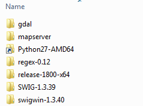

Compiling MapServer
Introduction
These steps are to compie the following:
GDAL 2.1
MapServer 7.0.2 x64
MS SQL Server plugin
No Oracle plugin
Downloads and Setup
Download CMake from https://cmake.org/download/ e.g. https://cmake.org/files/v3.5/cmake-3.5.2-win32-x86.zip
Note even though we are building a x64 version of MapServer the 32 bit cmake executable will work fine with 64 bit windows and 64 bit compilers. There is no x64 version of CMake.
Unzip cmake-3.5.2-win32-x86.zip into
C:\cmake-3.5.2-win32-x86Install Visual Studio 2013
Note during installation ensure to select the “x64” compiler for C++
Download the MapServer source for the required version from GitHub - https://github.com/mapserver/mapserver/archive/rel-7-0-1.zip and unzip to
C:\MapServerBuild\mapserverAlternatively you can check-out the sourcecode from GitHub (again to theC:\MapServerBuild\mapserverfolder).cd C:\MapServerBuild git clone https://github.com/mapserver/mapserver.gitDownload the GDAL source for the required version from GitHub - https://github.com/OSGeo/gdal/archive/2.1.zip and unzip to
C:\MapServerBuild\gdal. Alternatively you can check-out the sourcecode from GitHub (again to theC:\MapServerBuild\gdalfolder).cd C:\MapServerBuild git clone https://github.com/OSGeo/GDALDownload the SDK (software development kit) from http://download.gisinternals.com/sdk/downloads/release-1800-x64-dev.zip
Unzip release-1800-x64-dev.zip to
C:\MapServerBuildWhilst the SDK includes a version of SWIG (1.3.39), this currently has issues when creating the Python MapScript bindings.
For this reason download swigwin-1.3.40 from https://sourceforge.net/projects/swig/files/swigwin/swigwin-1.3.40/
For unknown reasons GDAL will not compile when using the latest version of SWIG (swigwin-3.0.8) from http://www.swig.org/download.html
Unzip SWIG to
C:\MapServerBuild\swigwin-1.3.40Download python-2.7.12.amd64.msi from https://www.python.org/downloads/release/python-2712/
Install python-2.7.12.amd64.msi to
C:\MapServerBuild\Python27-AMD64Alternatively you can install toC:\Python27and make a link to this folder:mklink /J C:\MapServerBuild\Python27-AMD64 C:\Python27Download jdk-8u73-windows-x64.exe from http://www.oracle.com/technetwork/java/javase/downloads/jdk8-downloads-2133151.html
Install jdk-8u112-windows-x64.exe to
C:\Program Files\Java\jdk1.8.0_112(this is the default install location).
At the end of these steps you should end up with a folder structure similar to below (SWIG version differs from the screenshot):
Modifying the MakeFile
The MakeFile contains commands on building MapServer and its associated utility programs. It is located in
the root of the development kit - C:\MapServerBuild\Makefile
Follow the steps below to make the minor adjustments to the MakeFile to match the configuration above.
Update the CMake location.
CMAKE_DIR = E:\builds\cmake-3.4.0-win32-x86 #CMAKE_DIR = E:\builds\cmake-2.8.12.1-win32-x86
#CMAKE_DIR = E:\builds\cmake-3.4.0-win32-x86 CMAKE_DIR = C:\cmake-3.5.2-win32-x86
Now update the MakeFile to point to the latest version of the MapServer sourcecode.
MS_DIR = mapserver-7-0
#MS_DIR = mapserver-7-0 MS_DIR = mapserver
Now update the MakeFile to point to the latest version of the GDAL sourcecode (this needs to point to the location of the makefile.vc file in the
gdal/gdalsubfolder).GDAL_DIR = gdal
#GDAL_DIR = gdal # needs the containing folder of the makefile.vc GDAL_DIR = gdal\gdal
Next update the MakeFile to point to the newer version of the SWIG.
SWIG_DIR = SWIG-1.3.39
#SWIG_DIR = SWIG-1.3.39 SWIG_DIR = swigwin-1.3.40
Update the MakeFile to point to the correct JAVA_HOME.
!IFDEF WIN64 JAVA_HOME = C:\Java\jdk1.8.0_25x64 !ELSE JAVA_HOME = C:\Java\jdk1.8.0_25
!IFDEF WIN64 #JAVA_HOME = C:\Java\jdk1.8.0_25x64 JAVA_HOME = C:\Program Files\Java\jdk1.8.0_112 !ELSE JAVA_HOME = C:\Java\jdk1.8.0_25
Note if you have installed the Java SDK then this will already be in your Window environment variables. Make sure that a previous 32-bit version of the Java Runtime Environment has not already set the JAVA_HOME setting. Search for the following in the output to check this setting:
set JAVA_HOME=C:\Program Files (x86)\Java\jre1.8.0_45
Or run the following to check the path:
echo %JAVA_HOME%
This should look more similar to the following - note there is no (x86):
set JAVA_HOME=C:\Program Files\Java\jdk1.8.0_73
Also update the hard coded executable name to use the SWIG_DIR variable:
"-DSWIG_EXECUTABLE=$(BASE_DIR)\SWIG-1.3.39\swig.exe""-DSWIG_EXECUTABLE=$(BASE_DIR)\$(SWIG_DIR)\swig.exe"Update the CMake command so that it does not attempt to build the Oracle plugin.
"-DWITH_ORACLE_PLUGIN=1""-DWITH_ORACLE_PLUGIN=0"Otherwise a message similar to the following appear up in the build log:
-- Could NOT find ORACLE (missing: ORACLE_LIBRARY)
Compiling
Open a command prompt (using the “VS2013 x64 Native Tools Command Prompt”) or a normal prompt and run the following command (which will set the build environment correctly):
REM VS 2008 "C:\Program Files (x86)\Microsoft Visual Studio 9.0\VC\vcvarsall.bat" amd64 REM VS 2013 "C:\Program Files (x86)\Microsoft Visual Studio 12.0\VC\vcvarsall.bat" amd64 REM Can't use the following as MakeFile not yet ready for VS2015 "C:\Program Files (x86)\Microsoft Visual Studio 14.0\VC\vcvarsall.bat" amd64
Next run the following to compile both GDAL and MapServer. As GDAL is a dependency of MapServer you will need to build both.
cd / cd C:\MapServerBuild nmake gdal nmake ms nmake ms-sql2008 nmake ms-python
If everything ran successfully you should see a new mapserver.dll (along with other files)
in C:\Build\release-1500-x64\bin
To check MapServer is working run the following commands:
cd /
cd C:\Build\release-1500-x64
SDKShell.bat
mapserv -v
You should see output similar to the following, showing the version of MapServer you compiled and available plugins.
MapServer version 7.0.0 OUTPUT=PNG OUTPUT=JPEG OUTPUT=KML SUPPORTS=PROJ SUPPORTS=AGG
SUPPORTS=FREETYPE SUPPORTS=CAIRO SUPPORTS=SVG_SYMBOLS SUPPORTS=SVGCAIRO SUPPORTS=ICONV
SUPPORTS=FRIBIDI SUPPORTS=WMS_SERVER SUPPORTS=WMS_CLIENT SUPPORTS=WFS_SERVER SUPPORTS=WFS_CLIENT
SUPPORTS=WCS_SERVER SUPPORTS=SOS_SERVER SUPPORTS=FASTCGI SUPPORTS=THREADS SUPPORTS=GEOS INPUT=JPEG
INPUT=POSTGIS INPUT=OGR INPUT=GDAL INPUT=SHAPEFILE
Python Builds
ERROR:root:Using C:\MapServerBuild\release-1800-x64
ERROR:root:DLL load failed: %1 is not a valid Win32 application.
Traceback (most recent call last):
File "C:\MapServerBuild2\PythonTest\test.py", line 5, in <module>
common.setup(r"C:\MapServerBuild2\release-1800-x64")
File "C:\Code\Python\mappyscript\mappyscript\common.py", line 44, in setup
import mapscript
File "C:\MapServerBuild2\release-1800-x64\bin\ms\python\mapscript.py", line 25, in <module>
_mapscript = swig_import_helper()
File "C:\MapServerBuild2\release-1800-x64\bin\ms\python\mapscript.py", line 21, in swig_import_helper
_mod = imp.load_module('_mapscript', fp, pathname, description)
ImportError: DLL load failed: %1 is not a valid Win32 application.
Fix with:
“C:Program Files (x86)Microsoft Visual Studio 12.0VCvcvarsall.bat” amd64 mt.exe -inputresource:c:windowssyswow64python27.dll;#2 -outputresource:”C:MapServerBuild2release-1800-x64binmspython_mapscript.pyd”;#2
Simple Build
LINK : fatal error LNK1104: cannot open file ‘python27_d.lib’
http://stackoverflow.com/questions/11311877/creating-a-dll-from-a-wrapped-cpp-file-with-swig LINK : fatal error LNK1104: cannot open file ‘python27_d.lib’
ALL_BUILD.vcxproj: The application which this project type is based on was not found. Please try this link for further information: http://go.microsoft.com/fwlink/?LinkID=299083&projecttype=8BC9CEB8-8B4A-11D0-8D11-00A0C91BC942
Ran:
devenv /Setup
Then reran nmake commands
Make sure following is installed?
Microsoft Foundation Classes for C++
Community 2013 Update 4